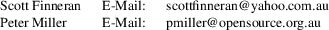

srec_ti_txt - Texas Instruments ti-txt (MSP430) file format
The ti-TXT format is used by the Texas Instruments MSP430 familty programming adapter.
The TI-TXT hex format supports 16-bit hexadecimal data. It consists of one or more sections, followed by the end-of-file indicator.
Each section consistes of an at (@) sign followed a execution start address (in hexadecimal), and newline, and then data bytes (in hexadecimal). The section address is followed by a newline. There are to be 16 data bytes per line, except for the last line in a section.
The end-of-file indicator is the letter q followed by a newline. The end-of-file indicator mandatory.
Size
Multiplier
In general, binary data will expand in sized by
approximately 3.0 times when represented with this
format.
Here is an example ti-txt file taken from the reference below:
@F000
31 40 00 03 B2 40 80 5A 20 01 D2 D3 22 00 D2 E3
21 00 3F 40 E8 FD 1F 83 FE 23 F9 3F
@FFFE
00 F0
q
http://www.ti.com/lit/pdf/slau101, section A.2. Note: the portion which says addresses must be even, and the number of data bytes in a section must be even, is wrong.
srec_ti_txt
version 1.65
Copyright (C) 1998, 1999, 2000, 2001, 2002, 2003, 2004,
2005, 2006, 2007, 2008, 2009, 2010, 2011, 2012, 2013, 2014,
2018, 2019, 2022 Peter Miller
The srec_ti_txt program comes with ABSOLUTELY NO WARRANTY; for details use the ’srec_ti_txt -VERSion License’ command. This is free software and you are welcome to redistribute it under certain conditions; for details use the ’srec_ti_txt -VERSion License’ command.
